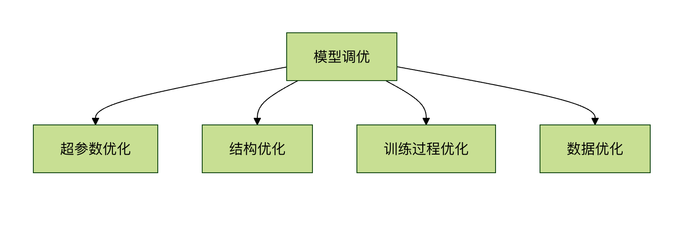

TensorFlow モデルチューニングテクニック
モデルチューニングは機械学習ワークフローにおいて極めて重要な工程であり、モデルの最終的なパフォーマンスに直接影響を与えます。TensorFlowでは、さまざまな技術的手法を用いてモデルの精度と汎化能力を向上させることができます。
モデルチューニングが必要な理由
- 初期モデルは通常、十分に理想的ではありません：最初にトレーニングしたモデルは、しばしば未学習（アンダーフィッティング）や過学習（オーバーフィッティング）の問題があります
- リソース利用の最適化：チューニングにより、同じ計算リソースでより良いパフォーマンスを得られます
- ビジネス要件への適合：アプリケーションシナリオによってモデルへの要求は異なります（例：精度vs速度）
1.2 チューニングの主な方向性

ハイパーパラメータチューニングテクニック
学習率の調整
学習率は最も重要なハイパーパラメータの1つであり、モデルの収束速度と最終的なパフォーマンスに直接影響を与えます。
静的学習率の設定
例
# 基本的な学習率設定の例
optimizer = tf.keras.optimizers.Adam(learning_rate=0.001)
optimizer = tf.keras.optimizers.Adam(learning_rate=0.001)
動的学習率戦略
例
# 学習率減衰の例
initial_learning_rate = 0.1
lr_schedule = tf.keras.optimizers.schedules.ExponentialDecay(
initial_learning_rate,
decay_steps=10000,
decay_rate=0.96,
staircase=True)
optimizer = tf.keras.optimizers.SGD(learning_rate=lr_schedule)
initial_learning_rate = 0.1
lr_schedule = tf.keras.optimizers.schedules.ExponentialDecay(
initial_learning_rate,
decay_steps=10000,
decay_rate=0.96,
staircase=True)
optimizer = tf.keras.optimizers.SGD(learning_rate=lr_schedule)
学習率ファインダー
例
# Keras Tunerを使用した学習率の探索
import keras_tuner as kt
def build_model(hp):
model = tf.keras.Sequential()
model.add(tf.keras.layers.Dense(10))
# 学習率の探索範囲を設定
hp_learning_rate = hp.Choice('learning_rate', values=[1e-2, 1e-3, 1e-4])
model.compile(optimizer=tf.keras.optimizers.Adam(learning_rate=hp_learning_rate),
loss='mse')
return model
tuner = kt.RandomSearch(build_model, objective='val_loss', max_trials=5)
import keras_tuner as kt
def build_model(hp):
model = tf.keras.Sequential()
model.add(tf.keras.layers.Dense(10))
# 学習率の探索範囲を設定
hp_learning_rate = hp.Choice('learning_rate', values=[1e-2, 1e-3, 1e-4])
model.compile(optimizer=tf.keras.optimizers.Adam(learning_rate=hp_learning_rate),
loss='mse')
return model
tuner = kt.RandomSearch(build_model, objective='val_loss', max_trials=5)
バッチサイズの選択
バッチサイズはトレーニングの安定性とメモリ使用量に影響します：
| バッチサイズ | 利点 | 欠点 |
|---|---|---|
| 小バッチ(16-64) | 収束が速く、汎化に優れる | トレーニングが不安定 |
| 中バッチ(64-256) | バランスの取れた選択 | より多くのメモリが必要 |
| 大バッチ(256+) | トレーニングが安定 | 局所的最適解に陥る可能性がある |
モデル構造の最適化
層サイズと深さの調整
幅調整テクニック
例
# Keras Tunerを使用して最適な層サイズを自動探索
def build_model(hp):
model = tf.keras.Sequential()
# 最適なニューロン数を探索
hp_units = hp.Int('units', min_value=32, max_value=512, step=32)
model.add(tf.keras.layers.Dense(units=hp_units, activation='relu'))
model.add(tf.keras.layers.Dense(10))
model.compile(optimizer='adam', loss='mse')
return model
def build_model(hp):
model = tf.keras.Sequential()
# 最適なニューロン数を探索
hp_units = hp.Int('units', min_value=32, max_value=512, step=32)
model.add(tf.keras.layers.Dense(units=hp_units, activation='relu'))
model.add(tf.keras.layers.Dense(10))
model.compile(optimizer='adam', loss='mse')
return model
深さ調整戦略
1、浅いネットワークから始めて、徐々に深さを増やす
2、残差接続(ResNet)を使用して深層ネットワークの勾配消失問題を解決する
例
# 残差ブロックの例
def residual_block(x, filters):
shortcut = x
x = tf.keras.layers.Conv2D(filters, (3,3), padding='same')(x)
x = tf.keras.layers.BatchNormalization()(x)
x = tf.keras.layers.Activation('relu')(x)
x = tf.keras.layers.Conv2D(filters, (3,3), padding='same')(x)
x = tf.keras.layers.BatchNormalization()(x)
x = tf.keras.layers.Add()([shortcut, x])
return tf.keras.layers.Activation('relu')(x)
def residual_block(x, filters):
shortcut = x
x = tf.keras.layers.Conv2D(filters, (3,3), padding='same')(x)
x = tf.keras.layers.BatchNormalization()(x)
x = tf.keras.layers.Activation('relu')(x)
x = tf.keras.layers.Conv2D(filters, (3,3), padding='same')(x)
x = tf.keras.layers.BatchNormalization()(x)
x = tf.keras.layers.Add()([shortcut, x])
return tf.keras.layers.Activation('relu')(x)
正則化テクニック
Dropout
例
model = tf.keras.Sequential([
tf.keras.layers.Dense(128, activation='relu'),
tf.keras.layers.Dropout(0.5), # 50%のニューロンがランダムにドロップされる
tf.keras.layers.Dense(10)
])
tf.keras.layers.Dense(128, activation='relu'),
tf.keras.layers.Dropout(0.5), # 50%のニューロンがランダムにドロップされる
tf.keras.layers.Dense(10)
])
L1/L2正則化
例
# L2正則化を追加
tf.keras.layers.Dense(64,
activation='relu',
kernel_regularizer=tf.keras.regularizers.l2(0.01))
tf.keras.layers.Dense(64,
activation='relu',
kernel_regularizer=tf.keras.regularizers.l2(0.01))
早期停止(Early Stopping)
例
early_stopping = tf.keras.callbacks.EarlyStopping(
monitor='val_loss',
patience=5, # 5エポック連続で検証損失が改善されない場合は停止
restore_best_weights=True) # 最良の重みを復元
model.fit(x_train, y_train,
validation_data=(x_val, y_val),
epochs=100,
callbacks=[early_stopping])
monitor='val_loss',
patience=5, # 5エポック連続で検証損失が改善されない場合は停止
restore_best_weights=True) # 最良の重みを復元
model.fit(x_train, y_train,
validation_data=(x_val, y_val),
epochs=100,
callbacks=[early_stopping])
トレーニングプロセスの最適化
データ拡張
例
# 画像データ拡張の例
data_augmentation = tf.keras.Sequential([
tf.keras.layers.RandomFlip("horizontal"),
tf.keras.layers.RandomRotation(0.1),
tf.keras.layers.RandomZoom(0.1),
])
# 拡張データを使用してトレーニング
model.fit(data_augmentation(x_train), y_train, epochs=10)
data_augmentation = tf.keras.Sequential([
tf.keras.layers.RandomFlip("horizontal"),
tf.keras.layers.RandomRotation(0.1),
tf.keras.layers.RandomZoom(0.1),
])
# 拡張データを使用してトレーニング
model.fit(data_augmentation(x_train), y_train, epochs=10)
バッチ正規化(Batch Normalization)
例
model = tf.keras.Sequential([
tf.keras.layers.Dense(64),
tf.keras.layers.BatchNormalization(),
tf.keras.layers.Activation('relu'),
tf.keras.layers.Dense(10)
])
tf.keras.layers.Dense(64),
tf.keras.layers.BatchNormalization(),
tf.keras.layers.Activation('relu'),
tf.keras.layers.Dense(10)
])
勾配クリッピング
例
# 勾配クリッピングによる勾配爆発の防止
optimizer = tf.keras.optimizers.Adam(clipvalue=1.0)
optimizer = tf.keras.optimizers.Adam(clipvalue=1.0)
高度なチューニングテクニック
ハイパーパラメータの自動チューニング
例
# Keras Tunerを使用した自動チューニング
tuner = kt.Hyperband(
build_model,
objective='val_accuracy',
max_epochs=10,
factor=3,
directory='my_dir',
project_name='intro_to_kt')
tuner.search(x_train, y_train, epochs=10, validation_data=(x_val, y_val))
best_model = tuner.get_best_models(num_models=1)[0]
tuner = kt.Hyperband(
build_model,
objective='val_accuracy',
max_epochs=10,
factor=3,
directory='my_dir',
project_name='intro_to_kt')
tuner.search(x_train, y_train, epochs=10, validation_data=(x_val, y_val))
best_model = tuner.get_best_models(num_models=1)[0]
モデル蒸留
例
# 教師モデルのトレーニング
teacher = tf.keras.models.load_model('teacher_model.h5')
# 生徒モデルの定義
student = tf.keras.Sequential([...])
# 蒸留損失
def distillation_loss(y_true, y_pred, teacher_pred, temp=5.0):
return tf.keras.losses.kl_divergence(
tf.nn.softmax(teacher_pred/temp),
tf.nn.softmax(y_pred/temp))
teacher = tf.keras.models.load_model('teacher_model.h5')
# 生徒モデルの定義
student = tf.keras.Sequential([...])
# 蒸留損失
def distillation_loss(y_true, y_pred, teacher_pred, temp=5.0):
return tf.keras.losses.kl_divergence(
tf.nn.softmax(teacher_pred/temp),
tf.nn.softmax(y_pred/temp))
チューニング実践のアドバイス
- ベースラインの確立：まず単純なモデルをベースラインとしてトレーニングする
- 一度に1つのパラメータだけを調整する：複数のパラメータを同時に変更するのは避ける
- 実験の記録：TensorBoardまたはMLflowを使用して実験を追跡する
- 検証セットの使用：検証セットが実際のデータ分布を代表していることを確認する
- 計算コストの考慮：チューニング効果とリソース消費のバランスを取る
例
# TensorBoardを使用してトレーニングプロセスを記録
tensorboard_callback = tf.keras.callbacks.TensorBoard(log_dir="./logs")
model.fit(x_train, y_train, epochs=10, callbacks=[tensorboard_callback])
tensorboard_callback = tf.keras.callbacks.TensorBoard(log_dir="./logs")
model.fit(x_train, y_train, epochs=10, callbacks=[tensorboard_callback])
これらのチューニングテクニックを体系的に適用することで、TensorFlowモデルのパフォーマンスを大幅に向上させることができます。モデルチューニングは反復的なプロセスであり、忍耐と綿密な実験設計が必要であることを覚えておいてください。
その他の拡張
クリックしてノートを共有
<p style="font-size:14px;">ノートはこの記事の内容の拡張である必要があります！</p><br> <p style="font-size:12px;"><a href="../tougao.html" target="_blank">記事の投稿は、こちらをクリックしてください</a></p> <p style="font-size:14px;"><a href="../w3cnote/runoob-user-test-intro.html" target="_blank">登録招待コードの取得方法</a></p> <h3 class="text-muted"><i class="fa fa-info-circle" aria-hidden="true"></i> ノートを共有する前に<a href=";.html" class="runoob-pop">ログイン</a>が必要です！</h3> <p><a href="../w3cnote/runoob-user-test-intro.html" target="_blank">登録招待コードの取得方法</a></p>